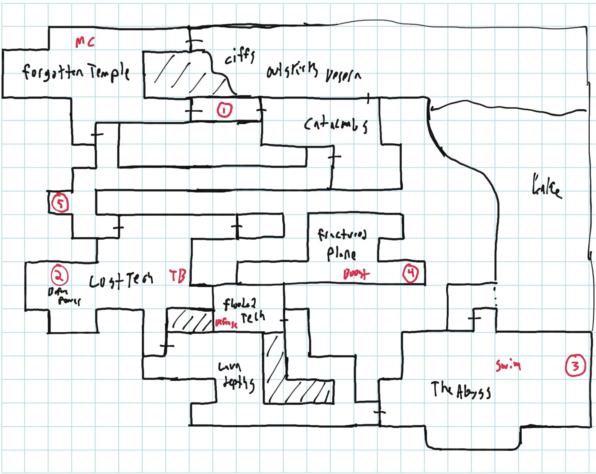

MYZE |
|---|
I had ideas for making a Metroidvania style game since 2006 when I really started getting into GameMaker and game design. This was back in threat time on the internet where game creation tools had just gotten to the point where individuals could make games on their own without being a coding expert. During this time, it had become sport to try to make a new 2D Metroid game using these tools and the plethora of ripped sprites out there. There were dozens of Metroid II remakes floating around (including AM2R which was the only one that got finished, and ‘Metroid SR388’ which ended up being a glorified tech demo in the end). Even I had my own little Metroid II remake that wasn’t much more than basic movement and sprite work. This whole subculture was created of people really into making these atmospheric, pixel art Metroidvania games and talking about them on forums. I spent most of my time there lurking, but in the back of my head I always wanted to make one myself. Not a fan game though. My own game.
2016 rolls around and after years of messing around with GameMaker and learning to draw, I started planning out a game of my own. I knew what I wanted: something atmospheric, with environmental storytelling, and a confusing maze of a world to explore.
The game started with a main character design. I wanted someone that looked like she could be the villain of any other game. Darker colors and a more sinister look. Her original design had a crown on the front which hid a face that was covered in a thick black smoke that looked demonic. As it turns out, the crown didn’t look as good from the side as it did from the front (looking good from the side being very important in a sidescroller) and the smoke effect wasn’t great for pixel art. So, the bald/crownless design ended up being her default look in the end.
First art of Myze from late 2016
STORY
The narrative of the game would be delivered through logs and set pieces. The story is less about the actions that you take in the game, but more about learning about the world and the world's history. Story over narrative. Lore based. There is some drama between Myze and a couple of the other characters in the game that you encounter. Most of the character’s that you meet will be the resident’s of the planet you’re on. The Damia homeworld which is home to the Damia.
THE DAMIA
Hundreds of years prior to the start of the game, there was great turmoil on Damia. The class struggle grew and the great technologies that were being invented were only for the privileged. Civil war started on the planet between those who lived in the part of the world overgrown with technology, and those who lived more traditionally and worshipped the Damia gods.
Once faster-than-light spacetravel was invented, sections of the population abandoned the planet and the world fell into a culture of tradition. Those left behind embraced a primitive culture and saw technology as something to only use sparingly, sort of like an alien race of Amish. Thus, the great technologies just sat there and rotted, being buried beneath the ground. Depowered, but not destroyed.
The Damia homeworld soon became full of temples and other places of worship. The residents live in villages rather than major cities. In simple homes made by hand and with primative tools. Population has gone down since the abandonment of electricity and mass-transportation. They believe in co-operation and togetherness. Prejudice is almost non-existent. The only thing that keeps them safe is that their world has grown toxic to species that are not native of the world. Their world isn’t resource rich, or desirable, so most of the universe just leaves them alone on their little rock.
The Damia that fled are a group of colonists. They don’t have a new homeworld, they live on space stations or inhabit small sections of other planets. There’s a saying that you can find a Damia on any planet. Unlike the homogenous culture of the homeworld damia, the spread out Damia blend in with their cultures and adapt to fit them. Even earth has Damia at the time the game takes place. (Futuristic scifi earth, of course.)
One notorious group of Damia called 'The Sisters' are a group of contractors who will attack small, resource filled planets and murder the population, then sell is to whoever paid for it. The group is run by a pair of Damia sisters; Myze and Menia. These two see themselves as royalty, wearing crowns and sitting on a throne on their ship. Menia is the smarter of the two. She does most of the business end of things and can be reasonable. Myze, on the other hand, is (or more accurately, was, an monster. Purely cruel and makes everyone she’s in a room with uneasy. It was said that Menia was the only one who kept Myze from being the world’s most powerful serial killer. Both of the sisters used their wealth for implants and bio-tech to make themselves stronger and more capable fighters.
Menia Concept art (with myze)
The inciting incident of the story is that a human named AVA has found a way to harness the natural toxicity of the Damia homeworld. The planet was once thought to be nearly useless when it came to resources, but AVA found out that the planet has an energy that she can harness for herself, giving her nearly god-like powers. She started the starve the world and slaughter it’s inhabitants to absorb the Damia toxicity from their bodies, getting more powerful the more she slaughtered and devoured.
The homeworld Damia needed someone to save them, but while they’re uselessness had kept them safe until then, now no one wanted to help them. In their last desperate efforts, they unearthed the lost technology and were able to formulate a plan. They put out a job posting under a fake client to The Sisters, claiming that the Damia homeworld now had a new resource and that they would pay to have the planet cleaned up (as only Myze and Menia could survive on the planet). Once the sisters arrived, the homeworld Damia used an experimental weapon developed late into the Damia civil war. They would wipe the mind of Menia and then they could trick her into thinking she was native to the planet. Menia’s natural intellect and her enhancements would make her perfect to kill AVA.
Things go wrong when Myze sniffs out their plot and begins to retaliate, slaughtering the homeworld Damia with her claws. In a panic, the Damia use the weapon against Myze instead, who ends up lost deep in the Damia jungles with no memory of who she is, where she is, or what she’s doing. Menia manages escape, but doesn’t want to leave the planet without her sister. This is where the game starts. Myze, confused and lacking memories of her powers, wakes up in the jungle and the player takes her on a journey to save the world.
MYZE
The alien herself plays on the trope of ‘amnesiac main character’ but I feel it’s ingrained into the story enough that it works. She never gets her memory back, and the Myze in the story sympathizes with the Damia and vows to save them from Ava. The violent nature is gone and she’s more calm and collected to fit the more exploration based gameplay.
Her character during the events of the game is minimal. Mostly reacting to events and her actions being what the player acts out. There’s tension between her and her sister, as Menia feels like her sister was killed and some strange Myze-looking being is walking around. Myze sees Menia as a nuisance, while AVA is seen as a great threat.
Myze was originally going to have a crown on her head to have sharpen her appearance, but the crownless spritework looked better (and more expressive) so I stopped drawing her with it after a while. Eventually it became a powerup that you would get in the game to boost some of your power and defense. The crown is a symbol of royalty that she sheds when her memory is wiped.
Looking back at her design, I can see a lot of the things in it that I like drawing. Claws and fangs, lack of hair, big floppy ears. I think some of the other designs I did for this game can be hit or miss, but I still really like Myze's design.
That’s about all I had planned for the story. The game events would be meetings with NPCs, Menia, and AVA.
WORLD
Top priority was making sure that all the locations in the game looked visually distinct despite how much I loved to re-use the same ground tile graphics over and over. Best way to do this was to just color every location different, using filters if I had to. I also made an effort to arrange blocks different. The temples were more blockish, which organic places had more slopes and strange geometry.
In order to keep track of all the rooms in the game, I make a gridded map where I could remember what everything was. There was some kinda coordinate system but it just looks like nonsense to me today. I think making larger rooms might have helped level design.
Not a whole lot of spritework was done for the game (as I wanted to focus more on the gameplay), but I did have a few sprites I made.
GAMEPLAY

The main gameplay is jumping, wallclimbing, and cutting up enemies with your big meaty claws. You can slash downwards to hop across enemies for quick travel. Slopes let you roll down them by pressing the down key. Early builds had less momentum in the movement, but I just kept cranking it up during development.
The world map was mostly laid out and I think something like 80% of the rooms were put into GameMaker.
The best part of any Metroidvania game is the items that you collect. You really want to feel that growth and power as you progress through the game. Myze had many ideas for powerups and there never was a clear set of items, but I’ll go over some of them.
Early item ideas
ITEMS
Wall climbing was a late idea, but it let's you climb up walls with a stamina meter. Once you unlock the ability the whole game-map opens right up. |
Upgrades to your claws would be vital. The basic ones were just strength and item gate upgrades, but I had ideas of elemental or power-based claws that you could customize in the menus. |
|---|---|
Swimming was never meant to be a big part of it, but all of my test players absolutely loved the swimming so I made it a powerup. Best with an analogue stick as it supported full 360 degree movement and felt like you were a dolphin. Makes a great upgrade from just treading water. |
This item was fun when it worked, but it was just too complicated both in code and for players to understand. You could grapple to ceilings and swing off them, pull yourself towards walls, pull enemies and items towards you, and use it as a weapon. |
 |
 |
The royal crown that Myze had before the whole "memory wipe" thing. Gives you extra denfense. |
Early on I was like...why not give Myze a gun? Turns out standing and shooting wasn't as fun as just cutting them up. Ended up removing it. |
A short dash move that you could use to jump a fixed distance in the air or on the ground. It was great for boss fights, but I ended up not liking this cause it was spammable when moving around the world. |
Rail grinding! On bare feet too how does that work... |
All these items would be optional in the menu if for some reason you wanted to disable them. Maybe I could have put in conflicting items that you had to toggle.
IN CLOSING
While Myze might just be a collection of dozens of unfinished GameMaker projects sitting on a harddrive in my home, I still have a fondness for the character. She's why I got into doing character designs and drawing more in the first place. Writing up this document on my game ideas has given me more of an appreciation for my work. If I ever draw more for the world of Myze and the Damia, I might just add to this page.
Art by Rinidisc 2016-2022